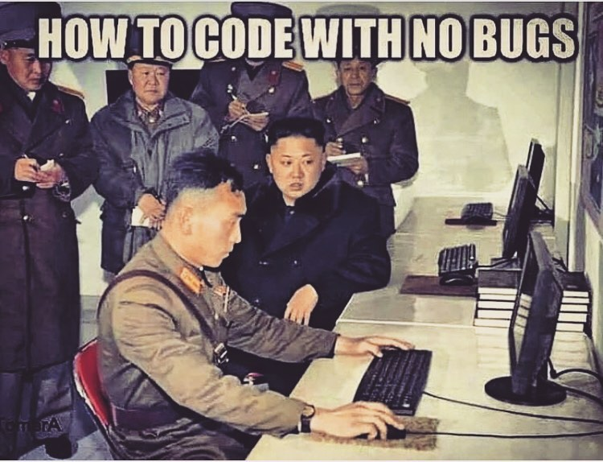
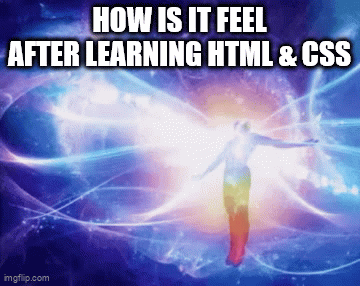

Hello World?
No, Hello Coding lah!
Belajar HTML & CSS biar keliatan SIGMA ABIS!

Kucing Akmal:
Teken arrow dibawah
buat lanjut coy!
Belajar HTML & CSS biar keliatan SIGMA ABIS!
Teken arrow dibawah
buat lanjut coy!
Coding adalah proses menulis instruksi atau perintah yang akan dijalankan oleh komputer.
Melalui coding, kita memberikan serangkaian perintah yang membentuk suatu program atau aplikasi,
sehingga komputer dapat memahami dan melaksanakan tugas sesuai dengan yang kita inginkan.
Coding juga merupakan keterampilan yang memungkinkan seseorang membuat berbagai perangkat lunak,
mulai dari aplikasi, situs web, hingga program komputer.

HTML, singkatan dari HyperText Markup Language, adalah bahasa standar yang digunakan untuk membuat dan menampilkan halaman web. HTML bukan bahasa pemrograman, melainkan bahasa markup yang menggunakan tag untuk menandai elemen-elemen pada halaman web, seperti teks, gambar, judul, dan tautan.
Deklarasi <!DOCTYPE html> memberitahu browser jenis dokumen yang sedang diproses. Elemen <html> adalah elemen akar yang membungkus seluruh halaman web. Elemen <head> berisi informasi meta data seperti judul halaman, dan elemen <body> berisi konten yang ditampilkan di halaman web.
berikut contoh struktur dasar HTML:
<!DOCTYPE html>
<html>
<head>
<title>Contoh Kode</title>
</head>
<body>
<h1>Judul</h1>
<p>Paragraf</p>
</body>
</html>
Indentasi adalah praktik menambahkan spasi di awal baris kode untuk membuat struktur penulisan kode lebih jelas dan mudah dibaca. Meskipun tidak mempengaruhi tampilan halaman web secara langsung, indentasi yang baik sangat penting untuk keterbacaan kode agar memudahkan developer untuk melihat hubungan antar elemen.
berikut contoh indentasi yang benar dan salah:
//--------BENAR-------- (Rapih dan mudah dibaca)
<!DOCTYPE html>
<html>
<head>
<title>Contoh Kode</title>
</head>
</html>
//--------SALAH-------- (Tidak rapih dan sulit dibaca)
<!DOCTYPE html>
<html>
<head>
<title>Contoh Kode</title>
</head>
</html>
berikut contoh elemen dasar HTML :
<!DOCTYPE html>
<html>
<body>
<div>
<h1>Skibidi Toilet</h1>
<h2>The legend of brainrot</h2>
<p>Kamu sigma banget <br>no cap!</p>
<a href="yt.com/sipalingsigma" target="_blank">
Tutorial Gyat Maxing
</a>
<img src="kucing_uiia.png" alt="Kucing Muter2">
<ul>
Hobi:
<li>Belajar HTML</li>
<li>Belajar CSS</li>
<li>Nonton Brainrot</li>
</ul>
<ol>
Skill:
<li>Ngoding</li>
<li>Bisa Masak Indomie</li>
<li>Teknisi Sound Horeg</li>
</ol>
</div>
</body>
</html>
Elemen HTML adalah blok penyusun dasar dalam bahasa markup HTML
yang digunakan untuk membuat struktur dan konten halaman web.
Elemen HTML memberi tahu browser bagaimana menampilkan dan menafsirkan
bagian tertentu dari dokumen. Secara sederhana,
elemen HTML terdiri dari tag pembuka, tag penutup,
dan konten di antaranya (meskipun beberapa elemen mungkin tidak memiliki tag penutup).
Contoh elemen dasar HTML:
berikut contoh penggunaan Class dan Id :
<!DOCTYPE html>
<html>
<body>
<div class="halaman-utama" id="halaman-utama">
<h1 class="judul-gyat" id="judul">Skibidi Toilet</h1>
<h2 class="subjudul">The legend of brainrot</h2>
<p class="paragraf">Kamu sigma banget <br>no cap!</p>
<img src="kucing_uiia.png" class="gambar" >
<ol class="sipaling-sigma" id="skill">
Skill:
<li>Ngoding</li>
<li>Bisa Masak Indomie</li>
<li>Teknisi Sound Horeg</li>
</ol>
</div>
</body>
</html>
Dalam HTML, class dan id adalah atribut yang digunakan untuk memberikan nama pada elemen,
namun memiliki perbedaan utama.
Berikut penjelasan lebih detail:
CSS atau Cascading Style Sheets adalah bahasa yang digunakan untuk mengatur tampilan dan tata letak halaman web. Dengan CSS, kita dapat mengubah warna, ukuran font, margin, padding, dan banyak aspek visual lainnya dari elemen HTML. CSS memungkinkan kita untuk memisahkan konten HTML dari style tampilan, sehingga membuat pengembangan web lebih terstruktur dan mudah dikelola.

Penulisan CSS (Cascading Style Sheets) dapat dilakukan dengan tiga cara utama:
inline style, internal style, dan external style.
Berikut adalah penjelasan lebih detail:
<html>
<body>
<p style="color: blue;">Teks ini berwarna biru</p>.
</body>
</html>
<head>
<style>
//memanggil elemen p
p {
color: blue;
}
//memanggil class paragraf
.paragraf {
font-size: 16px;
}
//memanggil id judul
#judul {
font-weight: bold;
}
</style>
</head>
//menghubungkan file CSS ke HTML
<head>
<link rel="stylesheet" href="style.css">
</head>
konfigurasi file style.css
//memanggil elemen p
p {
color: blue;
}
//memanggil class paragraf
.paragraf {
font-size: 16px;
}
//memanggil id judul
#judul {
font-weight: bold;
}

Properti CSS adalah aturan yang digunakan untuk menentukan tampilan elemen HTML pada halaman web. Properti ini memungkinkan Anda untuk mengatur berbagai aspek visual, seperti warna, ukuran, font, tata letak, dan banyak lagi.
berikut contoh penggunaan properti CSS:
p {
/* Mengatur warna teks menjadi biru */
color: blue;
/* Mengatur ukuran teks menjadi 16 piksel */
font-size: 16px;
/* Mengatur warna latar belakang menjadi kuning */
background-color: yellow;
/* Mengatur margin elemen menjadi 10 piksel */
margin: 10px;
/* Mengatur padding elemen menjadi 5 piksel */
padding: 5px;
/* Mengatur lebar elemen menjadi 300 piksel */
width: 300px;
/* Mengatur tinggi elemen menjadi 100 piksel */
height: 100px;
/*
Mengatur posisi elemen
relatif terhadap posisinya sendiri
*/
position: relative;
/*
Mengatur garis tepi elemen dengan lebar 1
piksel, solid, dan warna hitam
*/
border: 1px solid black;
}
Terima kasih udah pantengin materi akmal selama 1 jam, semoga materi ini bermanfaat dan bisa jadi awal langkah awal kalian dalam berkarya di dunia digital. Jangan cuma jadi penonton di internet, waktunya jadi kreator juga. Ayo nyalakan website versi kalian sendiri! (Salam Skibidi ges)
video perpisahan dari lord Akmal nih, dipencet ae gambarnya
